SAiデジタルメイキング！（ログレス）2
2.肌、髪
目次
・ラフ、下書き
・肌、髪←今ここ
・目、服
・もふもふ系
・他モンスター、背景
髪と肌の色塗りは一番好きな工程なので、これを過ぎると集中力が切れます('ω')
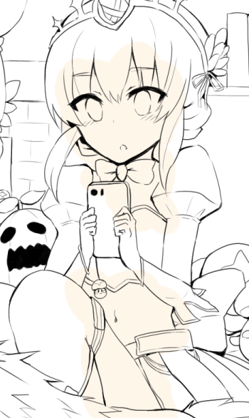
線画の下にレイヤーを1つ作り、肌色(R255,G246,B234)を鉛筆で大まかに塗ります。
実際に肌色で塗る範囲を無視して、本当に大まかでいいです。
肌色でない部分はあとで消しゴムで削るので、塗り残しがないよう線からはみ出すぐらいが丁度いいのです。
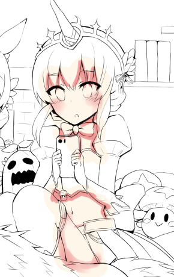
肌色で塗ったレイヤーの上に、さらにもう１つレイヤーを作り、そこに濃い肌色(R239,G150,B148)を筆と水彩筆を使って塗ります。
ほっぺとふともも部分が水彩筆で、それ以外は筆を使って塗りました。（以後、筆と水彩筆を駆使して塗っていきます）
肌の影を塗る場所は、「肌が他の物（髪、服など）の下に隠れているところ」というイメージで塗っています。
でも、普段はそんなことを一々意識しながら塗ってはいないので、画像のような場所に影をつけたら不自然にはならないだろうなーとか思ってます。影のつける位置がテンプレ化してきています。
ほっぺやふともも等、柔らかさを出したい場合は、くっきりした影ではなく、ふんわりした影になるようにします。（ここでは、ふんわり感を出すために筆でなく水彩筆を使いました）
全ての影がふんわりしすぎていると、絵自体が「しゃきっ」としないので、私は全体的に筆などではっきり影をつける描き方が好きです。水彩筆の設定も水分量等は低めに設定してあります。
（「エアブラシ」が影をつけるのに人気っぽいイメージがありますが、ふんわりしすぎていて難しいので、使えません。。。）
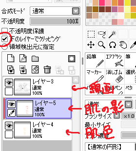
現時点でのレイヤーはこんな感じです。
レイヤー3……線画
レイヤー5……肌の影
レイヤー4……肌のベース色
肌の影であるレイヤー5は「下のレイヤーでクリッピング」をしています。
「下のレイヤーでクリッピング」とは、1つ下のレイヤーで塗ってある範囲にしか色が置けなくなる、という機能です。
これをすると、レイヤー4（肌のベース色）で塗った範囲をはみ出して肌の影を塗ってしまうということがなくなるので、大変便利です。
レイヤーに名前を付けるとかレイヤーのフォルダを作るとかで性格出ますよね……(｀・ω・´)；；；
私は時々レイヤー結合をしながら描き進め、レイヤーの一覧と使用メモリをすっきりさせながら描いてます。
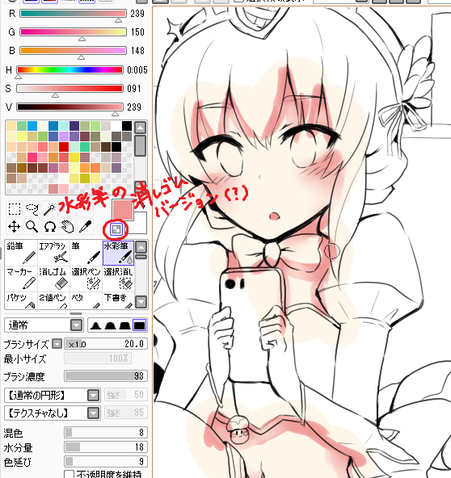
影を削る作業です。
肌の影を描いたレイヤーで、水彩筆を選択したまま画像のようなチェックを入れると、水彩筆をそのまま消しゴムにしたような消しゴムになります（？）
（水彩筆の色は選択せず、透明という色を選択した……というような。）
通常、消しゴムペンを選択すると、ふんわりとした消し味が出せないので、時々これを活用しながら影を削っています。
影の中にも光を入れるような感じで、画像のように削ります。
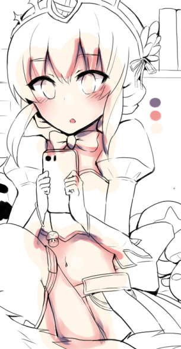
同じように、さらに1つ上にレイヤーを作り、また1段階暗い影を塗っては削ります。
肌に紫はよく合うので、この紫(R133,G113,B142)を使用しました。
目立たないですが、白で少しぼんやりと光も入れました。鼻周りを比較してもらえると分かるかも。
目の中も白で塗りつぶし、上部に紫で影を入れて削っています。
この後、肌に関するレイヤー（肌色、肌の影、さらに濃い影）を全て１つに結合します。
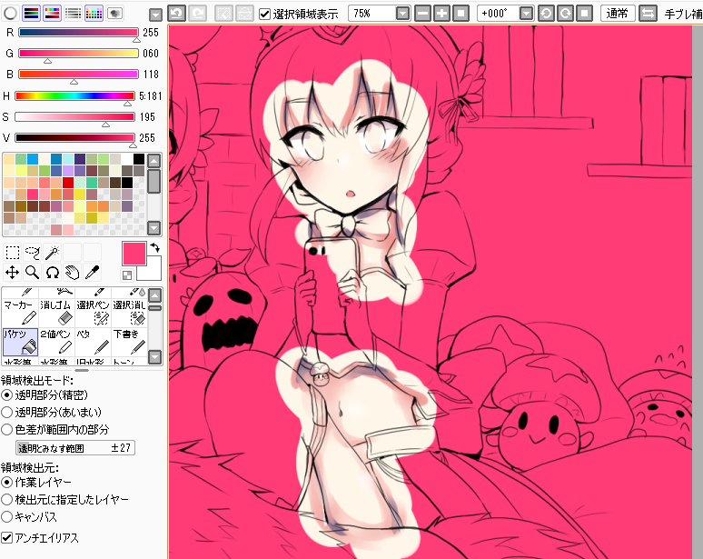
さて、肌以外の部分にはみ出した色を削る作業に入ります！
現在のレイヤーはこんな感じです。
・線画レイヤー
・肌レイヤー
・塗りつぶし専用レイヤー（←新しくレイヤーを作ります）
新しくレイヤーを作成し、そこに（何色でもいいので）ピンク(R255,G60,B118)のような目立つ色を一色に塗りつぶしてしまいます※。
※背景が白のときと背景がピンクのとき、肌色と背景の色の差を判別し易いのは圧倒的に後者だからです。
「わしは白と肌色の色の差ぐらい分かるわー！」って人は目立つ色で背景を塗りつぶさなくても大丈夫です。
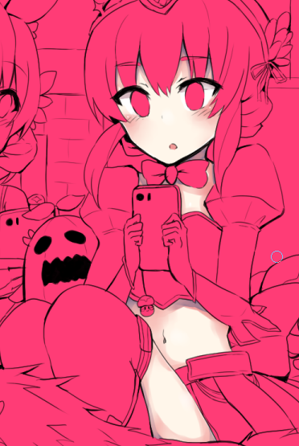
消しゴムペンで地道にはみ出した部分を削りました。背景がピンクだと削り跡が見やすいので便利です。
肌はこれで完成です※。
削り終わったらピンクで塗りつぶしたレイヤーは捨てるか非表示にしておいてください。
※色塗りは、基本的には、
一色で色を大まかに塗る→上にレイヤーを作り影をつける→影を削る→レイヤー統合してはみ出した色を消す→加工
の繰り返しですね。
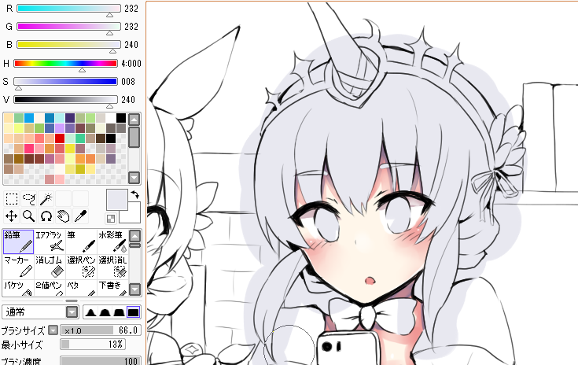
次は髪を塗ります！
肌の下にレイヤーを作り、髪色を一色(R232,G232,B240)で塗りつぶします。
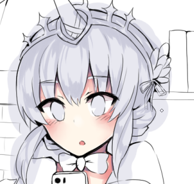
髪色の上にレイヤーを作り、濃い色(R202,G202,B217)で画像のように影をつけます。
髪の流れる方向に逆らわず、頭の丸みを強調できるような感じで影をつけています。
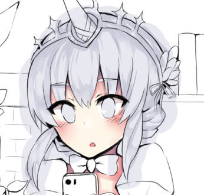
同様に影を削り、影を髪になじませます。
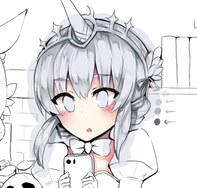
さらに濃い影(R172,G182,B184)ともっと濃い影(R100,G108,B112)でも塗ります。
ここまで髪の影は画像の矢印部分、三色で塗りました。
ベース色と最初につけた影の境目に、このもっと濃い影色(R100,G108,B112)で細くギザギザとなぞってやると、つやっぽさ（？）がでます。
あとは白色で微妙に光を入れました。
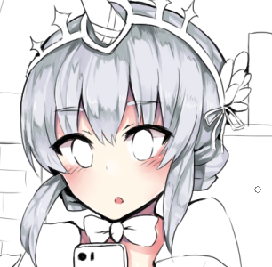
髪関連のレイヤーを全て1つに結合し、髪以外のはみ出した部分を削ります。
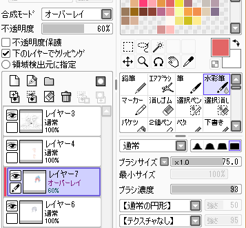
髪レイヤーの上に、「オーバーレイ」に設定したレイヤーを作り、「下のレイヤー（髪レイヤー）でクリッピング」します。
現在のレイヤーはこんな感じです。
・レイヤー3……線画
・レイヤー4……肌
・レイヤー7……オーバーレイ
・レイヤー6……髪
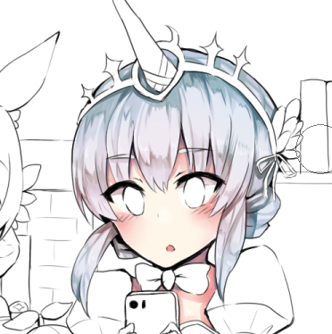
オーバーレイのレイヤーに、水彩筆でふんわりと色をのせていきます。
肌に近いところに赤(R226,G102,B102)を、肌から遠く空気に近いところに水色(R14,G130,B186)を塗りました。
仕上げにレイヤー自体の不透明度を調整して（１つ上の画像では60%に設定してあるのが分かると思います）濃さを調整します。
そうすると透明感というか空気感というか、髪色にメリハリがでます。
オーバーレイを重ねて色の調子を整える工程が好きです！
<<前へ 次へ>>
イラスト に戻る